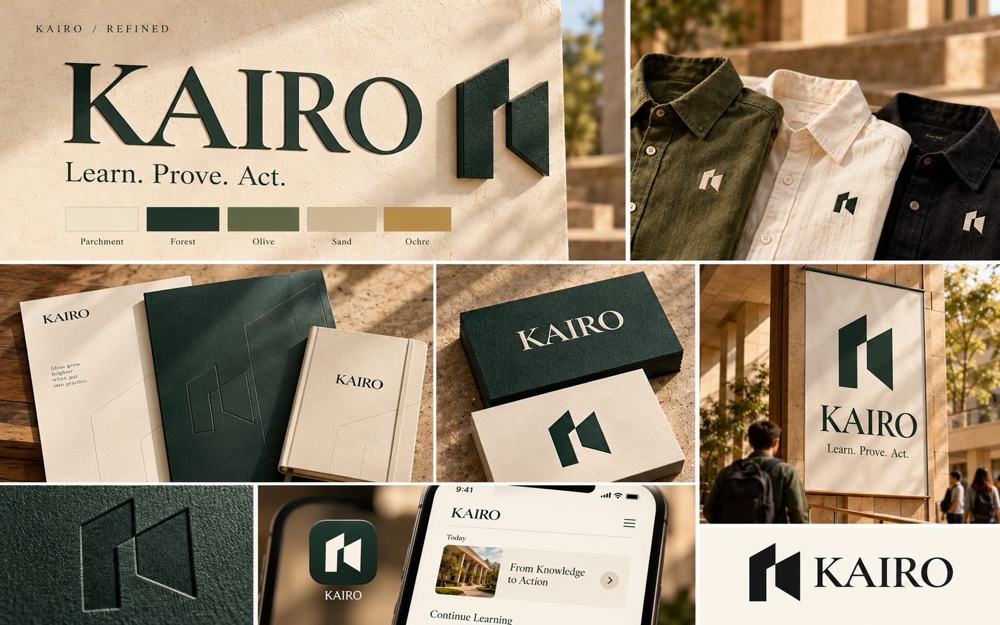
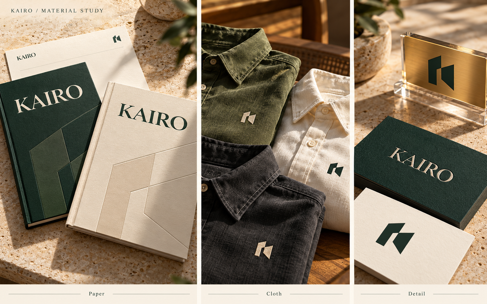
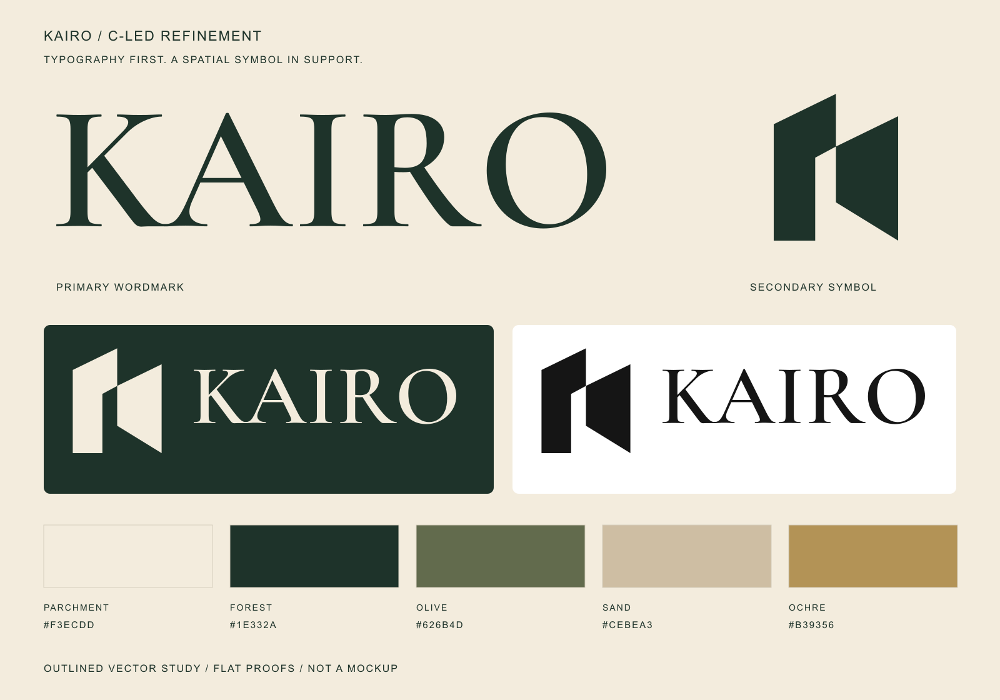
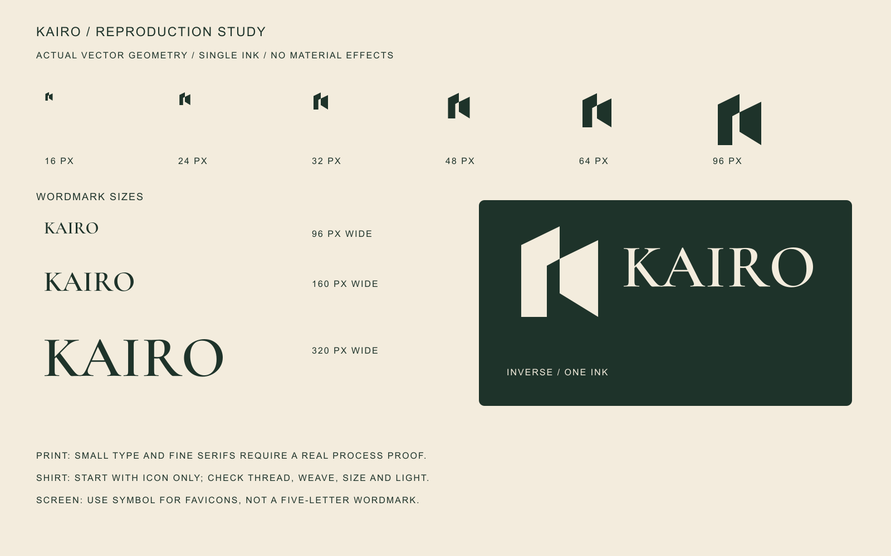

C’s warmth.
A’s spatial signature.
The serif wordmark leads. The passage symbol supports it. Cropped architectural contours carry the identity onto books and documents, while light and tactile finishes add depth.
One coherent identity.

Generated application visualisation guided by the actual vector proof. Material depth is a finish, not a required part of the logo.
Paper. Cloth. Detail.

Material concept study. Real print, foil, deboss and embroidery samples remain to be tested.
The artwork beneath the mockup.



Flat colour and actual-size studies.

Inspect at 100% scale. These are review proofs, not a claim that physical reproduction or small-size recognition has passed.